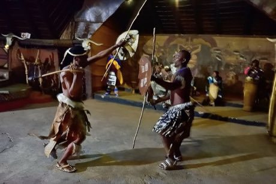

Home / Modern Heritage / Africa: Southern Africa
Playable heritage gameNguni stick-fighting rhythm skirmish
Also known as Intonga · donga
A stick duel from the cattle pastures of southern Africa: one long stick to strike with and one to guard. Here it is a game of touches and footwork, played to a steady beat by the crowd.

How to play
- Watch your rival's stance: it shows what he is about to try, and on harder levels he feints.
- Tap the move that beats it while the marker crosses the bright zone.
- Clean touches score points; a rival who is off balance leaves a touch worth four.
- Win two of the three rounds, or lead by nine points to end a round early.
Rules at a glance
- Only touches score; the contest is played to points and balance.
- The guard stick blocks a strike and answers with a counter.
- Tapping again while a move is playing out only tires you.
- A move answered by its counter fails and costs a little balance.
About the tradition
Stick-fighting has long been practised by herding boys and young men of the Nguni-speaking peoples of southern Africa, who carry one stick to strike with and one to defend. Bouts are held at gatherings such as weddings, under the eye of an experienced referee, and protective gear is little used, so the skill lies in timing and footwork.
Origins
Usually placed in the era of Modern Heritage (1800 to today), although its exact origins are uncertain, within the cultural world of Africa: Southern Africa.
Credits
- Craft model: World Heritage Games (original)
- Photo: South African Tourism from South Africa, CC BY 2.0, source on Wikimedia Commons
- Text: CC BY-SA 4.0, World Heritage Games.
Sources

Get the app
Nguni stick-fighting rhythm skirmish is one of 18 sports and skill games in the Sports & Skill of the World app for iPhone, iPad and Android. Live on Google Play. Submitted to the App Store; in review, and the store link appears here the day it goes live. One app, many traditions, no account needed.
More games to play

Pinata swing
Mexico +1 · Dexterity and skill gamesPlay preview · in the Sports & Skill of the World app
Ring Tilting
Croatia · Dexterity and skill gamesPlay preview · in the Sports & Skill of the World app

Ndebele geometric wall painting
South Africa · Crafts and makingPlay preview · in the Paper & Paint of the World app

Zulu beadwork letters
South Africa · Crafts and makingPlay preview · in the Paper & Paint of the World app
More from South Africa


Kaapse Klopse
Malaysia +1 · Street and playground games
Kati
Kenya +1 · Street and playground games